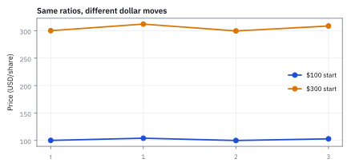
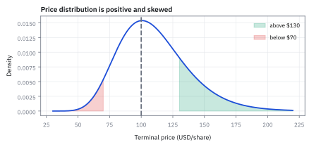
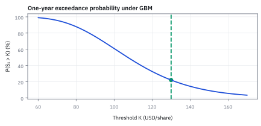

11.3 Linear Programming Duality
โจทย์หนึ่งมองได้สองด้านและให้คำตอบเดียวกัน
หัวข้อ 11.1 hedge ภาระ 120/90/50 ได้ถูกสุด 90.50 ด้วยหุ้นกับพันธบัตร ถ้าลูกค้าขอซื้อ call บนหุ้นตัวนั้น strike 100 ซึ่งจ่าย 30/0/0 ในสามสภาวะ ควรเสนอราคาเท่าไร?
เฉลย: dual ของโจทย์ 5.1 ให้ราคาของเงินหนึ่งดอลลาร์ในแต่ละสภาวะเป็น 1/6, 0.7833 และ 0 call จึงราคา 30 × 1/6 = 5.00 แต่ตลาดนี้ไม่สมบูรณ์ ราคาที่ไม่เปิดช่อง arbitrage จึงเป็นช่วง 5.00 ถึง 16.75
linear programming duality คือความเท่ากันระหว่างโจทย์เลือกกิจกรรมกับโจทย์ตั้งราคาทรัพยากร primal ตอบว่าต้องซื้ออะไร dual ตอบว่าของแต่ละชิ้นควรราคาเท่าไร และสองตัวเลขเท่ากันเมื่อไม่มี arbitrage
ศัพท์ที่ใช้ในหัวข้อนี้
- linear program (LP), primal form
- optimization problem ต้นทางที่เลือก hedge notionals เพื่อให้ผ่านความเสี่ยงและ liquidity constraints ใช้ตอบว่า desk ควรส่ง orders ขนาดเท่าไร
- linear program (LP), dual form
- optimization problem ที่ตั้งราคาต่อหนึ่งหน่วยของแต่ละ primal constraint ใช้สร้าง lower bound ของต้นทุนและวัดมูลค่าของ capacity
- dual variable
- ตัวเลขไม่ติดลบที่คูณกับ constraint หนึ่งแถวใน dual ใช้แปลงหน่วยของ constraint residual ให้เป็น USD
- shadow price
- การเปลี่ยนแปลงของ optimal objective เมื่อผ่อน right-hand side หนึ่งหน่วยภายในช่วงที่ active set ยังเดิม ใช้ตอบว่าซื้อ capacity เพิ่มแล้วคุ้มเท่าไร
- weak duality
- หลักที่บอกว่า feasible dual objective เป็น lower bound ของ primal cost ทุกคำตอบ ใช้ตรวจว่าตัวเลข dual ไม่อ้างว่าประหยัดเกินจริง
- strong duality
- สมบัติของ feasible bounded linear program ที่ทำให้ primal optimum เท่ากับ dual optimum ใช้เป็น checksum ของ model
- complementary slackness
- เงื่อนไขที่จับคู่ primal slack กับ dual variable แล้วบังคับให้ผลคูณเป็นศูนย์ ใช้ระบุว่า constraint ใดมีราคาและ constraint ใดไม่มีราคา
- state price
- ราคาวันนี้ของสัญญาที่จ่าย \$1 ถ้าสภาวะหนึ่งเกิดและ 0 ถ้าไม่เกิด เรียกอีกชื่อว่า Arrow–Debreu price ใช้ตั้งราคาของใดก็ได้ที่เขียน payoff เป็นรายสภาวะ
- risk-neutral probability
- state price ที่หารให้รวมกันได้ 1 ใช้คิดค่าเฉลี่ยของ payoff แล้วคิดลดด้วยดอกเบี้ยไร้ความเสี่ยงให้ได้ราคาตลาดพอดี ไม่ใช่โอกาสจริงที่สภาวะจะเกิด
- call option
- สัญญาที่ให้สิทธิซื้อสินทรัพย์ที่ราคา strike payoff คือราคาสินทรัพย์ลบ strike ถ้าเป็นบวก และ 0 ถ้าไม่ ใช้เป็นตัวอย่างของของใหม่ที่ตั้งราคาด้วย state price
- strike
- ราคาที่ตกลงไว้ล่วงหน้าในสัญญา option ใช้คำนวณ payoff ในแต่ละสภาวะ
- incomplete market
- ตลาดที่มีสภาวะมากกว่าจำนวนทิศที่สินทรัพย์สร้างได้ ใช้อธิบายว่าทำไม state price มีได้หลายชุด และของที่จำลองไม่ได้มีราคาเป็นช่วง
- no-arbitrage
- สภาพตลาดที่ไม่มีพอร์ตใดได้เงินฟรีโดยไม่มีทางขาดทุน ใช้เป็นกติกาบีบขอบบนและขอบล่างของราคา
- law of one price
- หลักที่ว่าของสองอย่างที่ให้กระแสเงินเหมือนกันทุกกรณีต้องมีราคาเท่ากัน ใช้ตรึงราคาพันธบัตรหรือ derivative จากพอร์ตที่จำลองมันได้
- binding constraint
- constraint ที่ไม่มี slack หรือ surplus ณ optimum ใช้ชี้ limit ที่กำลังกำหนด cost
- active set
- ชุด constraints ที่ binding ณ คำตอบหนึ่ง ใช้กำหนดช่วงที่ shadow price เดิมยังใช้ได้
สัญลักษณ์ที่ใช้ในหัวข้อนี้
| สัญลักษณ์ | ความหมาย | หน่วย |
|---|---|---|
| $x_Q,x_S$ | short notionals ของ QQQ และ SPY ใน primal LP | USD million |
| $b$ | beta exposure ขั้นต่ำที่ hedge ต้องลด; ในโจทย์นี้เท่ากับ 10.8 | beta-USD million |
| $U_Q,U_S$ | liquidity caps ของ QQQ และ SPY; เริ่มต้นเท่ากับ 6 ทั้งคู่ | USD million |
| $c_Q,c_S$ | execution costs ต่อ notional \$1 ล้าน; เท่ากับ 180 และ 90 | USD ต่อ USD million |
| $y$ | ราคาเงาของข้อจำกัดว่าต้องลด beta อย่างน้อยเท่าไร บอกว่าถ้าผ่อนเป้าลงหนึ่งหน่วย ต้นทุนจะลดลงกี่ USD | USD ต่อ beta-USD million |
| $u_Q,u_S$ | dual variables ของ QQQ และ SPY caps ใน sign convention แบบ greater-than | USD ต่อ USD million |
| $y^*,u_Q^*,u_S^*$ | ชุดราคาเงาที่ดันขอบล่างของต้นทุนขึ้นได้สูงสุด จึงเป็นคำตอบของโจทย์ฝั่ง dual | USD ต่อ native unit ของแต่ละ constraint |
| $s_B$ | beta exposure ที่ส่งมอบเกิน minimum requirement | beta-USD million |
| $s_Q,s_S$ | unused QQQ และ SPY capacity | USD million |
| $V_P,V_D$ | optimal objective values ของ primal และ dual | USD |
| $u=(u_1,u_2,u_3)$ | dual variables หนึ่งตัวต่อหนึ่งสภาวะในตัวอย่างแรก อ่านเป็นราคาของเงิน \$1 ในสภาวะนั้น | USD ต่อ USD ในสภาวะ |
| $t$ | ตัวแปรอิสระหนึ่งตัวที่เหลือเมื่อ dual มี 2 สมการ 3 ตัวแปร | USD ต่อ USD ในสภาวะ |
| $q_i$ | risk-neutral probability ของสภาวะ $i$ | ไม่มีหน่วย |
| $A^{\mathsf T}u \le c$ | เงื่อนไข dual feasibility เมื่อตัวแปร primal ไม่ติดลบ | หน่วยของ $c$ |
ที่มาที่ไป: บทสนทนาที่ทำให้เห็นว่าโจทย์มีสองด้าน
หลังจาก Dantzig คิดวิธีแก้ได้ เขาไปเล่าให้ John von Neumann ฟังในปี 1947 และ von Neumann ตอบกลับทันทีว่าปัญหานี้เป็นเรื่องเดียวกับทฤษฎีเกมที่เขาศึกษาอยู่
สิ่งที่ von Neumann ชี้ให้เห็นคือทุกโจทย์แบบนี้มีโจทย์คู่ของมันเสมอ และคำตอบที่ดีที่สุดของทั้งสองด้านเท่ากันพอดี
ผลที่ตามมามีค่ามากกว่าตัวคำตอบเสียอีก เพราะโจทย์คู่ให้ราคาเงาของทุกข้อจำกัด ซึ่งบอกตรง ๆ ว่าถ้าผ่อนข้อไหนจะประหยัดได้เท่าไร
ตัวเลขนั้นคือสิ่งที่เอาไปคุยกับฝ่ายความเสี่ยงได้จริง ว่ากฎข้อไหนแพงที่สุดและควรทบทวนก่อน
ประวัติศาสตร์และที่มา: บทสนทนาระหว่าง George Dantzig กับ John von Neumann
ในฤดูใบไม้ร่วงปี 1947 George Dantzig เดินทางไปยังสถาบัน Institute for Advanced Study ที่พรินซ์ตัน เพื่อนำเสนอ Simplex algorithm ให้กับ John von Neumann นักคณิตศาสตร์ผู้ยิ่งใหญ่แห่งยุค เมื่อ Dantzig อธิบายโจทย์ linear program ไปได้เพียงไม่กี่นาที von Neumann ก็ตัดบทและกล่าวว่า ทฤษฎีนี้เป็นสิ่งเดียวกับ Game Theory เรื่องทฤษฎีมินิแมกซ์ (Minimax Theorem) ที่เขาคิดร่วมกับ Oskar Morgenstern ในปี 1944
von Neumann มองเห็นทันทีว่าทุกปัญหา optimization มีโจทย์คู่แฝดซ่อนอยู่เสมอ หากโจทย์หนึ่งคือการจัดสรรทรัพยากรเพื่อให้ได้ผลงานสูงสุด โจทย์คู่ของมันคือการประเมินมูลค่าทรัพยากร เพื่อไม่ให้มีค่าเช่าทางเศรษฐกิจส่วนเกิน ต่อมาในปี 1951 David Gale, Harold Kuhn และ Albert Tucker ได้ร่วมกันพิสูจน์ Strong Duality Theorem อย่างสมบูรณ์แบบ
ในโลกการเงินเชิงปริมาณ duality คือรากฐานของการประเมินราคาเงาของข้อจำกัดความเสี่ยง และเป็นเครื่องมือออกใบรับรองความเหมาะสม (certificate of optimality) กล่าวคือเมื่อใดก็ตามที่ต้นทุนของ primal ลงมาเท่ากับขอบล่างของ dual เราสามารถรับประกันได้ทันทีว่านี่คือคำตอบที่ดีที่สุดในโลก โดยไม่ต้องค้นหาต่ออีกเลย
ตัวอย่างแรก — จากพอร์ต hedge ที่ถูกที่สุด ไปสู่ราคาของแต่ละสภาวะ
ใช้ตลาดเดิมจากหัวข้อ 11.1 แล้วถามกลับด้าน: แทนที่จะถามว่าต้องซื้ออะไร ถามว่าเงินหนึ่งดอลลาร์ในแต่ละสภาวะควรราคาเท่าไร
ขั้นที่ 1 — ของที่โจทย์ให้: primal จากหัวข้อ 11.1 ในรูปตำรา
ตัวเลขทั้งหมดยกมาจากหัวข้อ 11.1 ไม่ได้คำนวณใหม่ จับคู่สัญลักษณ์ของโจทย์กับรูปตำรา min cᵀx ภายใต้ Ax ≥ b ทีละตัว
มีข้อจำกัดสามแถว หนึ่งแถวต่อหนึ่งสภาวะ จึงจะมี dual variable สามตัว u₁, u₂, u₃ ไม่ติดลบ ต้องเช็กสองอย่างก่อนสร้าง dual: อสมการเป็น ≥ แล้ว และเป้าหมายเป็น min แล้ว ความผิดพลาดเรื่อง duality เกือบทั้งหมดเกิดที่การจัดรูปตรงนี้ ไม่ใช่ที่การคำนวณ
ขั้นที่ 2 — สร้างขอบล่างของต้นทุน: ถ่วงแต่ละสภาวะด้วย u แล้วบวก
คูณแถวของสภาวะที่ i ด้วย uᵢ ≥ 0 เครื่องหมายอสมการไม่พลิก แล้วบวกสามแถวเข้าด้วยกัน จัดกลุ่มตาม θ₁ กับ θ₂
อยากให้ด้านซ้ายเป็นต้นทุน 100θ₁ + 95θ₂ พอดี เพราะ θ ติดลบได้ ถ้าตัวคูณของ θ₁ ต่างจาก 100 แม้นิดเดียว เราเลือก θ₁ บวกหรือลบมาก ๆ ให้ขอบล่างพังได้เสมอ จึงต้องเท่ากันเป๊ะ ไม่ใช่แค่ไม่เกิน
ได้กฎที่ใช้ทั้งหัวข้อ: ตัวแปร primal ที่ติดลบได้คู่กับข้อจำกัด dual ที่เป็นสมการ ส่วนตัวแปร primal ที่ต้องไม่ติดลบคู่กับข้อจำกัด dual แบบไม่เกิน ในภาษาการเงิน ถ้า short ได้เสรี ราคาที่ dual คำนวณต้องตรงกับราคาตลาดพอดี ไม่อย่างนั้นเกิด arbitrage ได้ทั้งสองทาง
ขั้นที่ 3 — แก้ข้อจำกัดของ dual: สองสมการ สามตัวแปร เหลืออิสระหนึ่งตัว
ข้อจำกัด Sᵀu = p อ่านทีละคอลัมน์ของ S คือทีละสินทรัพย์ ตั้ง t = u₃ แล้วเขียน u₁ กับ u₂ ในรูปของ t
ลบแถวพันธบัตรออกจากแถวหุ้น พจน์ของ u₂ หายไปเพราะมี 100 เท่ากัน เหลือ 30u₁ + 70t − 100t = 100 − 95 จึงได้ u₁ = 1/6 + t จากนั้นเอา 100 หารแถวพันธบัตรตลอดได้ u₁ + u₂ + t = 0.95
คำตอบที่ใช้ได้ของ dual จึงเป็นส่วนของเส้นตรง ไม่ใช่จุดเดียว เพราะมีสามสภาวะแต่มีสินทรัพย์แค่สองตัว นี่คือหน้าตาของตลาดไม่สมบูรณ์เมื่อมองจากฝั่ง dual ถ้ามีสินทรัพย์อิสระตัวที่สาม จะได้สามสมการสามตัวแปร u เหลือชุดเดียว
ขั้นที่ 4 — weak duality ด้วยตัวเลข: บีบคำตอบจากสองข้าง
หยิบแผน primal ที่ใช้ได้มาหนึ่งแผน และ u ที่ใช้ได้มาหนึ่งชุด โดยไม่ต้องเป็นตัวที่ดีที่สุด แล้วดูว่าคำตอบถูกบีบไว้แค่ไหน
ยังไม่ได้แก้ LP ให้จบ แต่รู้แล้วว่าคำตอบอยู่ในช่วงกว้าง 3.67 ถ้าใครเดาพอร์ตมาได้ 92.17 แล้วหา u มาได้ 88.50 ก็พิสูจน์ได้ทันทีว่าไม่มีใคร hedge ได้ถูกกว่า 88.50 ใน LP ที่มีตัวแปรเป็นแสน ขอบล่างแบบนี้คือสิ่งที่บอกว่าหยุดคำนวณได้แล้ว
ขั้นที่ 5 — หาค่าสูงสุดของ dual: เป้าหมายเป็นเส้นตรงใน t
แทน u(t) จากขั้นที่ 3 ลงใน Xᵀu แล้วกางทีละก้อน
ตัวคูณของ t ติดลบ ยิ่ง t ใหญ่ยิ่งแย่ จึงดันลงไปที่ t = 0 ได้ D = 90.50 เท่ากับ P ช่วง [88.50, 92.17] ในขั้นที่ 4 ยุบเหลือจุดเดียว นี่คือ strong duality
เลข −10 ไม่ใช่เรื่องบังเอิญ การเพิ่ม t หนึ่งหน่วยคือเดินทิศ (+1, −2, +1) ใน u และพอร์ตที่ชนะในหัวข้อ 11.1 เหลือเงิน (0, 0, 10) เทียบกับภาระ ผลต่อเป้าหมายคือ −(0·1 + 0·(−2) + 10·1) = −10 พอดี สภาวะที่ยังเหลือเงินทิ้งคือสภาวะที่ห้ามให้ราคาเป็นบวก
ขั้นที่ 6 — complementary slackness: ในแต่ละสภาวะ ต้องมีศูนย์อย่างน้อยหนึ่งตัว
คูณเงินที่เหลือของแต่ละสภาวะกับราคาของสภาวะนั้น ทุกแถวต้องได้ศูนย์
สภาวะที่ hedge พอดีมีราคาเป็นบวก สภาวะที่เหลือเงินทิ้งมีราคาเป็นศูนย์ เหตุผลเชิงเศรษฐศาสตร์: ถ้าสภาวะขาลงมีเงินเหลือ 10 อยู่แล้ว เงินเพิ่มอีก \$1 ในสภาวะนั้นไม่ได้ช่วยอะไร จึงไม่มีใครยอมจ่ายเพื่อมัน
ขั้นที่ 7 — อ่าน u เป็นราคาเงา: เพิ่มภาระ \$1 แล้วแก้ใหม่
ถ้า u ในแต่ละสภาวะคือราคาจริง การเพิ่มภาระของสภาวะนั้น \$1 ต้องทำให้ต้นทุน hedge เพิ่มเท่ากับ u พอดี ลองแก้ใหม่ทีละแถว
ส่วนต่างทั้งสามแถวตรงกับ u* ทุกตัว: 0.16667, 0.78333 และ 0 เหตุผลคือ D = Xᵀu และ P = D ดังนั้น derivative ของ P เทียบกับ Xᵢ ก็คือ uᵢ ตราบใดที่ u* ยังไม่กระโดดไปมุมอื่น ตัวแปร dual จึงถูกเรียกว่าราคาได้อย่างชอบธรรม
ราคาเงาใช้ได้ในช่วงหนึ่งเท่านั้น ถ้าดันภาระขาลงจาก 50 เกิน 60 สภาวะขาลงจะเริ่มชนพอดี แล้ว u₃ จะกระโดดจากศูนย์ขึ้นทันที
ขั้นที่ 8 — อ่าน u เป็น state price แล้วตั้งราคาของใหม่
uᵢ* คือราคาวันนี้ของสัญญาที่จ่าย \$1 ถ้าสภาวะ i เกิด ตรวจก่อนว่ามันให้ราคาของที่มีในตลาดถูก แล้วค่อยตั้งราคา call
ห้าบรรทัดแรกคือข้อจำกัด Sᵀu = p นั่นเอง dual บังคับแค่ว่าราคาของแต่ละสภาวะต้องอธิบายราคาตลาดที่มีอยู่ได้ call จ่าย 30 เฉพาะขาขึ้น ราคาจึงเป็น 30 × 1/6 = 5.00
ผลรวมของ u คือราคาพันธบัตรต่อ \$1 ได้ดอกเบี้ยไร้ความเสี่ยง 5.26% หาร u ด้วย 0.95 ได้ risk-neutral probability 17.54%, 82.46%, 0% ใช้คิดค่าเฉลี่ยแล้วคิดลดได้ราคาหุ้น 100 พอดี ตัวเลขนี้มาจากราคาล้วน ๆ ไม่เคยถามเลยว่าโอกาสขาขึ้นจริงเท่าไร
ขั้นที่ 9 — ในตลาดไม่สมบูรณ์ ราคา call เป็นช่วง ไม่ใช่เลขเดียว
ขั้นที่ 3 บอกว่า u ที่ใช้ได้มีทั้งเส้น ราคา call ที่คิดจาก u แต่ละชุดจึงต่างกัน ตรวจปลายทั้งสองด้วยพอร์ตจริง
พอร์ตแรกจ่ายไม่เกิน call ทุกสภาวะ ใครขาย call ถูกกว่า 5.00 เราซื้อ call แล้วขายพอร์ตนี้ได้กำไรฟรี พอร์ตที่สองจ่ายไม่น้อยกว่า call ทุกสภาวะ ใครซื้อแพงกว่า 16.75 เราขาย call แล้วถือพอร์ตนี้ได้กำไรฟรี
ของที่จำลองไม่ได้ในตลาดไม่สมบูรณ์จึงมีแต่ช่วงราคา 5.00 คือปลายล่างของช่วงนั้น ไม่ใช่ราคาที่ถูกต้องเพียงราคาเดียว
ขั้นที่ 10 — นิยาม: กติกา no-arbitrage สองข้อ และราคาที่ต้องเป็นบวก
สัญญาหนึ่งจ่ายราคา p วันนี้ แล้วได้กระแสเงิน c₁, c₂, … ในอนาคต ซึ่งเป็นบวกหรือลบก็ได้ เจ็ดบรรทัดแรกเป็นนิยามของตลาดที่ไม่มีเงินฟรี สามบรรทัดล่างลองกับ call
ข้อแรก: ถ้าสัญญาไม่เคยทำให้เสียเงินในอนาคต ราคาต้องไม่ติดลบ ถ้าราคาติดลบ ผู้ซื้อได้เงินวันนี้และไม่มีทางขาดทุนภายหลัง คนจะแห่มาซื้อจนราคาถูกดันขึ้นถึงศูนย์ ข้อสอง: ถ้ายังมีโอกาสได้เงินจริงอย่างน้อยหนึ่งงวด ราคาต้องมากกว่าศูนย์
สองข้อนี้บอกขอบของราคา แต่ไม่ได้บอกราคาเป๊ะ ๆ เบื้องหลังมีสมมติฐานสามข้อ: ตลาดมีสภาพคล่องพอ ข้อมูลราคาเปิดเผยเท่ากันทุกคน และการแข่งขันไล่ส่วนต่างราคาหายไปเร็ว
ขั้นที่ 11 — พันธบัตรที่จ่าย 100: สองพอร์ตบีบราคาจนเหลือค่าเดียว
พันธบัตรจ่าย A = 100 ในอีกหนึ่งปี กู้หรือให้กู้ได้ไม่จำกัดที่ดอกเบี้ย r = 5.26% ซึ่งได้จากขั้นที่ 8 สร้างสองพอร์ตที่ปีหน้าได้ศูนย์พอดี แล้วใช้กติกาข้อแรกกับต้นทุนวันนี้
พอร์ตแรกซื้อพันธบัตรแล้วกู้เงิน 100/(1 + r) ปีหน้าได้ 100 จากพันธบัตรแล้วคืนเงินกู้พร้อมดอกเบี้ย 100 พอดี กระแสเงินปีหน้าเป็นศูนย์ ราคาวันนี้จึงต้องไม่ติดลบ ได้ขอบล่าง
พอร์ตที่สอง short พันธบัตรแล้วเอาเงิน 100/(1 + r) ไปให้กู้ กลับด้านทุกอย่าง ได้ขอบบน สองขอบเท่ากัน ราคาจึงถูกตรึงที่ 95.00 ตรงกับราคาพันธบัตรในตลาดของตัวอย่างนี้พอดี นี่คือ law of one price
สองบรรทัดล่างคือโลกจริง: ถ้าดอกเบี้ยกู้ 6% สูงกว่าดอกเบี้ยให้กู้ 5% สองพอร์ตใช้คนละอัตรา ราคาจึงเหลือเป็นช่วง [94.34, 95.24] แบบเดียวกับที่ call ในขั้นที่ 9 มีช่วงราคา และถ้าตลาดกู้ยืมไม่ลึกพอ ช่วงนี้จะกว้างขึ้นอีก
คำตอบ — dual ของโจทย์ hedge คือราคาของแต่ละสภาวะ
คำถาม: เขียน dual ของโจทย์ 5.1 ตรวจ weak และ strong duality และใช้ตัวแปร dual ตั้งราคา call strike 100
ของที่มี: ขั้นที่ 1 ถึง 11
1. Dual คือ max Xᵀu ภายใต้ Sᵀu = p และ u ≥ 0 คำตอบ u* = (0.16667, 0.78333, 0)
2. Weak duality 92.17 ≥ P ≥ D ≥ 88.50 และ strong duality P = D = 90.50
3. u* คือราคาเงาและ state price: call ราคา 5.00 ดอกเบี้ย 5.26% และ q = (17.54%, 82.46%, 0%)
เฉลย: call ที่ไม่เปิดช่อง arbitrage อยู่ในช่วง 5.00 ถึง 16.75 โดย dual ที่ดีที่สุดของโจทย์ hedge ให้ปลายล่าง 5.00
เช็ก 10 วินาที: 120/6 + 90(0.78333) = 20 + 70.5 = 90.5 และ 30/6 = 5
งานจริง: การหาพอร์ต hedge ที่ถูกที่สุดกับการตั้งราคา derivative เป็นปัญหาเดียวกันมองคนละด้าน primal ตอบว่าต้องซื้ออะไร dual ตอบว่าของชิ้นนี้ควรราคาเท่าไร และ u* ยังแตกต้นทุน 90.50 ได้เป็น 20.0 สำหรับขาขึ้น 70.5 สำหรับทรงตัว และ 0 สำหรับขาลง เงินเกือบ 78% ไปกองที่สภาวะเดียว u* มาจากราคาวันนี้ ราคาหุ้นหรือพันธบัตรขยับเมื่อไรต้องแก้ใหม่
กับดัก: อย่าเรียก 5.00 ว่าราคาที่ถูกต้องของ call ในตลาดที่มีสามสภาวะแต่มีสินทรัพย์สองตัว มันเป็นแค่ปลายล่างของช่วง
โค้ดตรวจ dual, state price และช่วงราคา call
import numpy as np
S=np.array([[130,100],[100,100],[70,100.]]); X=np.array([120,90,50.]); p=np.array([100,95.])
u=lambda t: np.array([1/6+t,0.95-1/6-2*t,t])
for t in (0,0.2,0.39167):
assert np.allclose(S.T@u(t),p,atol=1e-3) and (u(t)>=-1e-4).all()
assert abs(X@u(0.2)-88.5)<1e-3 and abs(X@u(0)-90.5)<1e-9
call=np.array([30,0,0.])
assert abs(call@u(0)-5)<1e-9 and abs(call@u(0.39167)-16.75)<1e-3
assert np.allclose(S@[1,-1],[30,0,-30]) and np.allclose(S@[0.5,-0.35],[30,15,0])
q=u(0)/0.95
assert abs(0.95*(q@S[:,0])-100)<1e-9โค้ดนี้ตรวจว่า u(t) ผ่าน Sᵀu = p ตลอดช่วง t ค่า 88.50 และ 90.50 ของ dual ราคา call ที่ปลายทั้งสอง พอร์ตสองพอร์ตที่บีบช่วงราคา และ risk-neutral probability ที่คืนราคาหุ้น 100
รูปทั่วไป — พิสูจน์ weak duality เมื่อตัวแปร primal ไม่ติดลบ
ขั้นที่ 2 สร้างขอบล่างด้วยตัวเลข บรรทัดข้างล่างทำเรื่องเดียวกันแบบทั่วไป เมื่อตัวแปรต้องไม่ติดลบ ข้อจำกัด dual จึงเป็นแบบไม่เกินแทนสมการ ทฤษฎีบท Weak Duality สามารถพิสูจน์ได้ในห้าบรรทัดโดยอาศัยเพียงสมบัติพีชคณิตของ matrix และความจริงที่ว่าการคูณอสมการด้วยตัวเลขที่ไม่ติดลบย่อมรักษาเครื่องหมายเดิมไว้เสมอ ผลลัพธ์นี้รับประกันว่า dual objective จะทำหน้าที่เป็นขอบล่างที่ไม่มีวันทะลุต้นทุนจริง
หัวใจของการพิสูจน์อยู่ที่การสลับตำแหน่งคูณระหว่าง matrix กับ vector ตัวแปร เริ่มต้นจากต้นทุน primal $c^{\mathsf T}x$ แล้วแทน $c$ ด้วยขอบบนจาก dual feasibility $A^{\mathsf T}u \le c$
สมบัติการคูณ matrix ช่วยย้ายวงเล็บเปลี่ยนกลุ่มเป็น $u^{\mathsf T}(Ax)$ จากนั้นแทนข้อจำกัด primal $Ax \ge b$ โดยเครื่องหมายอสมการไม่เปลี่ยนทิศทางเพราะ multiplier $u \ge 0$
ผลลัพธ์สุดท้ายคือ $b^{\mathsf T}u$ ซึ่งพิสูจน์ว่าค่า dual ทุกจุดที่ feasible จะอยู่ต่ำกว่าหรือเท่ากับต้นทุน primal เสมอ เรียกว่า Weak Duality Theorem
รูปทั่วไป — dual ของ dual คือ primal เดิม
ใช้วิธีเดียวกับขั้นที่ 2 กับโจทย์ dual เอง: ถ่วงแต่ละแถวของ Aᵀu ≤ c ด้วยตัวแปรใหม่ที่ไม่ติดลบ แล้วถามว่าได้ขอบบนของ bᵀu เป็นอะไร
ตัวถ่วงใหม่ x ต้องไม่ติดลบเพื่อไม่ให้อสมการพลิก และต้องทำให้ Ax ≥ b เพื่อให้ bᵀu ถูกกดไว้ใต้ xᵀAᵀu เมื่อ u ≥ 0 ขอบบนที่แน่นที่สุดคือค่าต่ำสุดของ cᵀx ภายใต้เงื่อนไขเหล่านั้น ซึ่งก็คือ primal เดิมทุกตัวอักษร
ผลคือ primal กับ dual เป็นคู่กันจริง จะเริ่มสร้างจากฝั่งไหนก็ได้คู่เดียวกันเสมอ ในงานจริงจึงเลือกแก้ฝั่งที่มีตัวแปรน้อยกว่าได้
ตัวอย่างที่สอง — dual ของ beta hedge ด้วย QQQ และ SPY
โจทย์ให้อะไรมาบ้าง: ใช้ LP ของตัวอย่างที่สองในหัวข้อ 11.1 เขียน constraints ทุกแถวเป็น greater-than แล้วให้ dual variables ไม่ติดลบ: beta row อยู่ตามเดิม ส่วน upper bounds ต้องคูณด้วย −1 การวางเครื่องหมายแบบนี้ทำให้ dual objective หักราคาของ capacity ออกจากมูลค่า beta requirement อย่างตรวจสอบได้
ขั้นที่ 12 — เขียน primal ด้วย three greater-than rows
จัดโจทย์เดิมให้ข้อบังคับทุกข้อไปทางเดียวกันก่อน จะได้สร้างโจทย์คู่ได้โดยไม่สับสนเครื่องหมาย
ใส่ short notional $x_Q$ กับ $x_S$ หน่วย USD million แล้วคูณด้วยต้นทุนของแต่ละตัวเพื่อหา $V_P$ หน่วย USD แถวแรกบังคับให้ลด beta อย่างน้อย 10.8 beta-USD million ส่วนสองแถวหลังกลับเครื่องหมายของ cap \$6 ล้าน ให้อยู่ในรูป greater-than ผลคือ primal problem ที่คำนวณต้นทุนต่ำสุดและเทียบกับ dual ได้ตรงหน่วย
ขั้นที่ 13 — สร้าง lower bound จาก constraints
แนวคิดของ dual คือหาขอบล่างของต้นทุน โดยผสมข้อบังคับเข้าด้วยกันด้วยน้ำหนักที่ไม่ติดลบ
การสร้างขอบล่างเริ่มต้นจากการคูณแต่ละแถวของข้อจำกัดด้วยตัวคูณที่ไม่ติดลบ แถว beta ถูกถ่วงน้ำหนักด้วย $y \ge 0$ ส่วนแถวเพดานสภาพคล่องของ QQQ และ SPY ถูกคูณด้วย $u_Q, u_S \ge 0$
เมื่อนำอสมการทั้งสามแถวมารวมกันทางพีชคณิต ฝั่งซ้ายจะจัดกลุ่มตามตัวแปร $x_Q$ และ $x_S$ ขณะที่ฝั่งขวาจะกลายเป็นมูลค่ารวมของข้อกำหนดหักด้วยมูลค่าเพดานสภาพคล่อง
ผลรวมฝั่งขวาคือสูตรคำนวณขอบล่าง ซึ่งพร้อมจะแปลงเป็น dual objective function ในขั้นตอนถัดไป
ขั้นที่ 14 — จำกัด coefficients ไม่ให้เกิน primal cost
ขอบล่างจะใช้ได้ก็ต่อเมื่อผลผสมไม่แพงเกินต้นทุนจริงของทุกตัวแปร เงื่อนไขนั้นเองที่กลายเป็นข้อบังคับของโจทย์คู่
$V_D$ คือ maximum dual lower bound หน่วย USD; constraint แรกทำให้ coefficient ของ $x_Q$ ไม่เกิน QQQ cost 180 และ constraint ที่สองทำแบบเดียวกันกับ $x_S$ และ SPY cost 90 จึงรับประกัน weak duality
ขั้นที่ 15 — ลองราคาเงาสองชุดด้วยมือ: ขอบล่างขยับได้ แต่ไม่เคยเกินต้นทุนจริง
ทฤษฎีบอกว่าทุกชุดราคาเงาที่ถูกกติกาให้ขอบล่างของต้นทุน ลองด้วยมือสามชุดแล้วดูว่ามันขยับอย่างไร
ชุดแรกถูกกติกาแต่ให้ขอบล่างแค่ 972 ซึ่งต่ำกว่าต้นทุนจริง 1,260 มันบอกแค่ว่า “ไม่มีทางถูกกว่า 972” ซึ่งจริงแต่ไม่คม
ชุดที่สองดันขอบล่างขึ้นถึง 1,260 พอดี เท่ากับต้นทุนจริงของแผนที่ดีที่สุด ขอบล่างที่ดีที่สุดกับคำตอบจริงจึงชนกัน นี่คือสิ่งที่ strong duality สัญญาไว้
ชุดที่สามพยายามดันสูงกว่านั้นแต่ผิดกติกา (coefficient ของ $x_Q$ จะติดลบ ทำให้ขอบล่างพังเป็นลบอนันต์ตามหัวข้อ 11.4) ขอบล่างจึงเกิน 1,260 ไม่ได้
ขั้นที่ 16 — ตรวจ dual candidate ทีละ constraint
ลองน้ำหนักชุดหนึ่งแล้วตรวจทีละข้อว่าถูกกติกาไหม
การทดสอบความถูกต้องของคำตอบ dual candidate ต้องตรวจให้ครบทุกเงื่อนไข ข้อจำกัดของ QQQ มีค่าเท่ากับ 180 พอดี ซึ่งไม่เกินเพดานต้นทุนการทำรายการ
ข้อจำกัดของ SPY หักค่าความขาดแคลน 60 ออกจาก 150 เหลือ 90 เท่ากับต้นทุนของ SPY พอดี ทั้งสองแถวจึงเป็น binding constraints ของฝั่ง dual
ตัวแปรทุกตัวมีค่าไม่ติดลบ ยืนยันว่าจุดนี้อยู่ใน feasible region ของ dual อย่างสมบูรณ์
ขั้นที่ 17 — strong duality ปิดยอดที่ \$1,260
จุดที่สวยที่สุดของทั้งหัวข้อ คือขอบล่างที่ดีที่สุดไม่ได้ต่ำกว่าคำตอบจริง แต่เท่ากันพอดี
ต้นทุนจริงของ primal คำนวณจากการซื้อคำสั่ง short ของ QQQ จำนวน 4 ล้านและ SPY จำนวน \$6 ล้าน ได้ต้นทุนรวม \$1,260 พอดี
ฝั่ง dual ประเมินมูลค่าของ beta requirement ไว้ที่ \$1,620 แล้วหักมูลค่าความขาดแคลนของโควตา SPY ออก \$360 เหลือยอดสุทธิ \$1,260 เท่ากันเป๊ะ
เมื่อ duality gap ลดลงเหลือศูนย์ ทฤษฎี Strong Duality ยืนยันว่าเราพบจุด optimum ของทั้งสองฝั่งแล้วอย่างเด็ดขาด
ขั้นที่ 18 — complementary slackness ระบุ constraint ที่มีราคา
บอกได้ทันทีว่าข้อบังคับไหนกำลังกดดันจริง และข้อไหนมีที่ว่างเหลือ ข้อที่มีที่ว่างจะมีราคาเป็นศูนย์เสมอ
เงื่อนไข complementary slackness ระบุว่าผลคูณระหว่างราคาเงากับตัวแปร slack ต้องเป็นศูนย์เสมอในทุกแถว
ข้อกำหนด beta และเพดาน SPY มี slack เป็นศูนย์เพราะถูกใช้จนเต็ม ทำให้ราคาเงา $y^*=150$ และ $u_S^*=60$ มีค่าเป็นบวกได้
ในทางกลับกัน QQQ เหลือโควตาสภาพคล่อง \$2 ล้าน ราคาเงา $u_Q^*$ จึงถูกบีบให้เป็นศูนย์โดยอัตโนมัติ สะท้อนว่าการขอขยายโควตา QQQ เพิ่มขึ้นจะไม่มีประโยชน์ในการลดต้นทุนเลย
แล้วเอาไปใช้ทำอะไรได้จริงบ้าง
การมองโจทย์เดียวจากสองด้าน ให้ของแถมที่มีค่ามากกว่าคำตอบเสียอีก
ใช้อ่านราคาเงาของทุกข้อจำกัด ซึ่งบอกตรง ๆ ว่าถ้าผ่อนข้อนั้นหนึ่งหน่วยจะประหยัดได้เท่าไร นี่คือข้อมูลที่ใช้ต่อรองกับฝ่ายความเสี่ยงได้จริง
ใช้ตรวจว่าคำตอบที่ได้ดีที่สุดจริง โดยไม่ต้องไล่ดูทุกความเป็นไปได้
ใช้ตัดสินว่าควรลงทุนแก้ข้อจำกัดข้อไหนก่อน โดยดูจากราคาเงาที่สูงที่สุด
Figure 11.3a — คำตอบของ primal กับ dual ตรงกัน

แท่ง primal และ dual ปิดยอดที่ \$1,260 เท่ากัน จึงเป็น checksum ว่า objective, constraint signs และ units ของ hedge LP สอดคล้องกัน
Figure 11.3b — มูลค่าของโควตา SPY ที่เพิ่มมาอีกหนึ่งหน่วย

เมื่อ coefficients เดิมยังใช้ได้ การเพิ่ม SPY cap จาก \$6 ล้าน เป็น \$7 ล้าน ลด optimal cost จาก \$1,260 เหลือ \$1,200 หรือประหยัด \$60 ตรงกับ shadow price
Figure 11.3c — คู่ของ slack กับ shadow price

constraint ที่ slack เป็นบวกอย่าง QQQ cap มี shadow price ศูนย์ ส่วน beta row และ SPY cap ที่ slack เป็นศูนย์มีราคาเป็นบวก นี่คือ complementary slackness ที่มองเห็นได้
Figure 11.3d — ภาพตัดของพื้นที่คำตอบฝั่ง dual

เมื่อตรึง QQQ-cap price ที่ศูนย์ dual feasibility บังคับให้ $y\le150$ และ $u_S\ge y-90$ จุด (150,60) อยู่บนขอบที่ให้ lower bound สูงสุด
คำตอบ — capacity 1M ลด cost \$60
คำตอบ: ถ้าเพิ่ม SPY cap เป็น \$7 ล้าน ให้ใช้ SPY \$7 ล้าน กับ QQQ $(10.8-7)/1.2=3.8/1.2=3.167$ USD million beta reduction ยังเท่ากับ 10.8 และต้นทุนใหม่คือ \$1,200 ต่ำกว่าเดิม \$60
ตรวจเองใน 10 วินาที: แทน SPY 7 กับ QQQ 3.167 กลับใน beta constraint ต้องได้ประมาณ 10.8 และ 90×7 + 180×3.167 ต้องปิดใกล้ \$1,200 โดยส่วนต่างเล็กมาจากการปัดเศษ
ใช้ตัดสินใจ: ขอ capacity เพิ่มเมื่อค่าใช้จ่ายจริงของ SPY capacity \$1 ล้าน ต่ำกว่า saving \$60; ถ้าแพงกว่านั้นให้ใช้ cap เดิม
กับดัก: อ่าน shadow price เป็น quote ถาวร
shadow price ใช้ได้เฉพาะช่วงที่ active set และ cost assumptions ยังเดิม ถ้า SPY capacity เพิ่มมากจน constraint อื่นเปลี่ยนสถานะ หรือ market impact เปลี่ยน slope ตัวเลข \$60 ต้องคำนวณใหม่ มันเป็น local sensitivity ไม่ใช่ gift card ที่ใช้ได้ตลอดอายุ model
ข้อจำกัด: วิธีนี้สมมติอะไร และของจริงเป็นอย่างไร
| เรื่อง | วิธีนี้สมมติว่า | ของจริงเป็นอย่างไร | ผลที่ตามมาเวลาใช้งาน |
|---|---|---|---|
| การตีความราคาเงา | ราคาเงาใช้ได้ทุกขนาดการผ่อน | ใช้ได้เฉพาะการผ่อนเล็กน้อยรอบจุดปัจจุบัน | ผ่อนเยอะแล้วคำตอบเปลี่ยนโครงสร้าง ราคาเงาเดิมใช้ไม่ได้อีก |
| ความเป็นเอกลักษณ์ | ราคาเงามีค่าเดียว | เมื่อมีคำตอบหลายแบบ ราคาเงาก็มีหลายชุด | การอ่านความหมายทางธุรกิจต้องระวัง เพราะเลือกชุดไหนก็ได้ |
| ข้อจำกัดที่ไม่ตึง | ข้อที่ยังเหลือที่ว่างไม่มีราคา | ตรงตามทฤษฎี | แต่คนมักแปลกใจว่าทำไมข้อจำกัดที่ดูสำคัญกลับมีราคาเป็นศูนย์ |
แถวแรกคือความผิดพลาดที่พบบ่อยที่สุดเวลานำราคาเงาไปใช้ในการตัดสินใจจริง
สรุปที่ใช้ได้จริง
- dual ของโจทย์ hedge ภาระ 120/90/50 คือ max Xᵀu ภายใต้ Sᵀu = p ได้ u* = (1/6, 0.7833, 0) และ D = P = 90.50 ตัวแปร primal ที่ติดลบได้ทำให้ข้อจำกัด dual เป็นสมการ
- u* เป็นทั้งราคาเงาของภาระแต่ละสภาวะและ state price ที่ตั้งราคา call ได้ 5.00 แต่ในตลาดไม่สมบูรณ์ ราคาที่ไม่เปิดช่อง arbitrage คือช่วง 5.00 ถึง 16.75
- no-arbitrage บอกขอบของราคา: พันธบัตรที่จ่าย 100 ถูกสองพอร์ตกู้กับให้กู้บีบจนเหลือ 100/1.0526 = 95.00 แต่ถ้าดอกเบี้ยกู้กับให้กู้ต่างกัน 6% กับ 5% ราคาเหลือเป็นช่วง [94.34, 95.24]
- dual LP ตั้งราคาของ primal constraints และสร้าง lower bound ของ execution cost
- dual optimum คือ $y^*=150$, $u_Q^*=0$, $u_S^*=60$ ภายใต้ sign convention ที่ระบุชัด
- strong duality ให้ $V_P=V_D=\$1{,}260$ และทำหน้าที่เป็น model checksum
- SPY shadow price \$60 ต่อ capacity \$1 ล้าน ใช้ได้เฉพาะในช่วงที่ active set ไม่เปลี่ยน